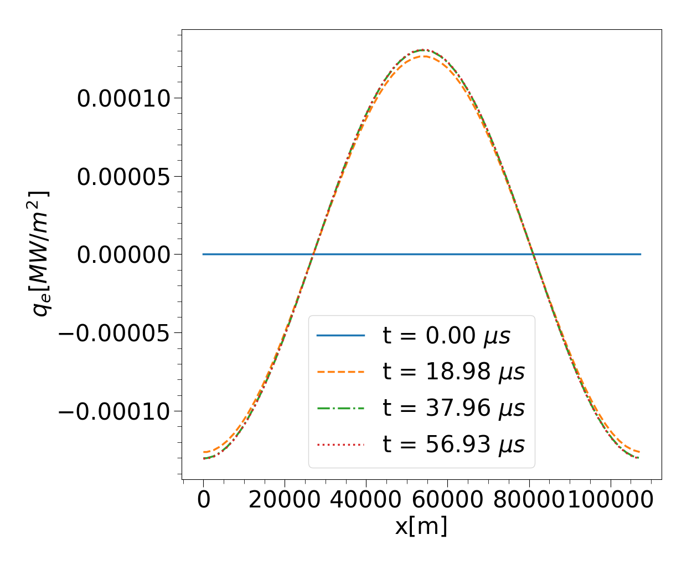

Prerequisites and Setup¶
Here prerequisites and first time setup of SOL-KiT are discussed.
Prerequisites¶
The following is a list of SOL-KiT prerequisites for a Linux system (instructions are specifically for Ubuntu).
A Fortran compiler (gfortran is preferred) with MPI support
The OpenMPI library
To install MPI on Ubuntu:
$ sudo apt-get install mpich
or use download-mpich flag when installing PETSc below.
The PETSc library (<https://www.mcs.anl.gov/petsc/>, recommended version: 3.8.4)
To be configured (for the default version of SOL-KiT) with:
--configModules=PETSc.Configure --optionsModule=config.compilerOptions --with-cc=gcc --with-cxx=g++ --with-fc=gfortran --with-debugging=0 COPTFLAGS="-O3 -march=native -mtune=native" CXXOPTFLAGS="-O3 -march=native -mtune=native" FOPTFLAGS="-O3 -march=native -mtune=native"
Setup¶
In order to set SOL-KiT up, simply run
$ make SOL-KiT
in the SOURCES folder. This will create a SOL-KiT executable in the parent folder. After this, to run SOL-KiT just call it from the parent directory with
$ mpirun -np NP ./SOL-KiT
where NP is the number of MPI processes to be used.
A simple test¶
The default input files are distributed with the source code. These can be found in SOL-KiT/INPUT. After running SOL-KiT with default inputs, the OUTPUT folder should be filled out with various results. On examination of OUTPUT/SH_q_ratio/SH_q_ratio_00300.txt, the data should, with the two irrelevant spikes removed, give the following value:
If the files
- OUTPUT/HEAT_FLOW_X/HEAT_FLOW_X_00000.txt,
- OUTPUT/HEAT_FLOW_X/HEAT_FLOW_X_00100.txt,
- OUTPUT/HEAT_FLOW_X/HEAT_FLOW_X_00200.txt,
- OUTPUT/HEAT_FLOW_X/HEAT_FLOW_X_00300.txt,
are plotted against OUTPUT/GRIDS/X_GRID.txt with all quantities expressed in SI units, a graph similar to the one below should result.
